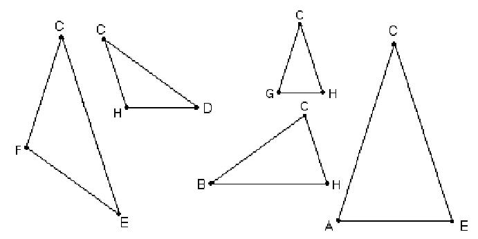
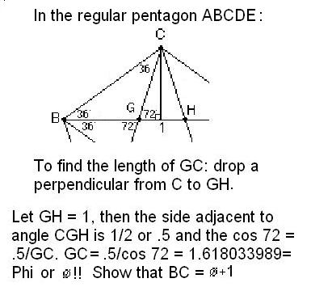
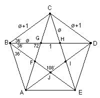
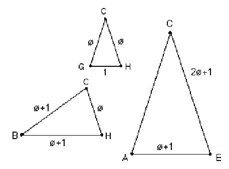
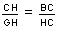
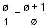
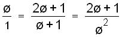
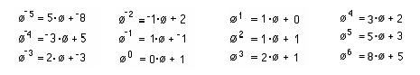

A Regular Pentagon and
Powers of Phi +/Chapter 7
 |
There
will be other things you find, but here are some things Barbara and Jenny,
9th graders at the time, found:
A
smaller pentagon FGHIJ is formed inside, but points in the opposite
direction.
The
sum of the interior angles of a regular polygon is
(n-2) x 180�
One
interior angle of a regular pentagon is
(5-2) x 180�
/5 = 108�.
There
are only 3 different angles in the pentagon, 36�, 72� (2 x 36�),
and 108� (3 x36�) in the figure.
|
|
There
are only 2 different shape triangles. The obtuse isosceles triangles like
HCD (36�,
36�,108�)
of only two sizes, and similar.
The other shape triangles are the acute isosceles triangles (72�,
72�,
36�) of three sizes, and these
are similar triangles also.
|

We found also that sin 72�/
sin 36� = � = 1.6..., and sin 108�/
sin 36� = �,
and
sin108�/
sin 36� = 1.
| Don proved to himself that GC = CH = �,
with trig functions:
 |

|
| The
acute triangles at the right taken out of the pentagon, all have the same
angles 36�, 72�, and 72�, therefore are similar triangles (do the eye
test). They are isosceles triangles (2 sides equal). It turns out they are
golden triangles,
because when we measure
CH and GH, the ratio of the longest side to the shortest side
CH/GH
=
the golden mean � =~
1.6. Which we also proved with trig, above. We used the symbol � (the
Greek letter phi) to represent it. So we let
CH=� and GH = 1. |
 |
Since
triangle
HBC
is similar to triangle GCH, the sides are proportional, therefore they
said
the following proportion must be true:
 and

From that, �2
= �+1. �+1 is also the length of the side of the
pentagon. Triangle ACE is
also similar to triangle GCH so the following
proportion is true:

and
therefore �3 =
2�+1. Find these lengths on the pentagon.
Extending
the lines, Barbara and Jenny found �4 =
3�+2 and �5 =
5�+3.
They saw a pattern in the powers of � and wrote a computer program which
printed out:

...
AND
YOU SHALL MEET A HORRIBLE FATE... YOU SHALL SPEND
ALL
ETERNITY FINDING POWERS OF
PHI
...
Barbara and Jenny solved this quadratic
equation �2
- � -1 = 0 that they got above, using the quadratic formula,
obtaining �1
= (1+Sqrt 5)/2 = 1.61803 and �2
=
(1-Sqrt
5)/2 = -0.61803. They realized that �1
*
�2
=
-1
and �1 + �2
=
1.
What
happens if you draw the diagonals of the smaller pentagon? Make up other
questions.
See
Cristobal Vila's beautiful short movie "Nature by Numbers" at
See
Xah Lee's site on curves- especially the equiangular spiral
See
also Golden Triangle, Pentagon,
Sunflower head , and The
Golden Angle on the MAP
Geoffrey
graphs the ratios of the Fibonacci numbers and writes a
program to get the infinite sequence which
has a limit.
Tara writes a
story "A Quest For The Sacred Golden Pineapple, Pine Cone and
Artichoke"
Jamie an
8th grader, solved the quadratic equation x2
- x - 1 = 0, by iteration to get Phi,
and he and Don wrote a program to do this on a TI-84 Plus.
Comparing
the spirals of fibonacci numbers, the Nautilus shell, and The equal-tempered
Musical scale
See
also Dr.
Ron Knott's great webite for much more on the Fibonacci numbers.